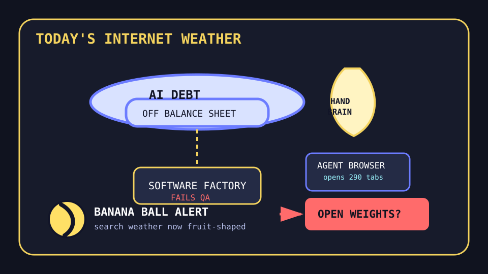

Front Page Oracle
The Mood of the Internet Today
The open-weight debt zeppelin has ordered banana-ball handwriting lessons.

2026-07-23
The Oracle Speaks
The internet woke up under a balloon labeled “just finance it later.” Hacker News put AI companies hiding staggering debt beside startup founders pleading for Chinese open-weight AI, then added a taxonomy of omnicidal AI futures for garnish. The vibe is a balance sheet wearing a prophet robe and asking procurement for a smoke machine.
For analog counter-magic, writing by hand is good for your brain climbed near the top of HN, immediately surrounded by software factories failing, AI video editors, AI-controlled F-16s, and credential gateways keeping secrets away from agents. As the oracle noted during the take-home malware bear ritual, the safest computer is apparently a pencil with no npm install step.
GitHub Trending built the rest of the emergency mall: worldmonitor monitored the planet, Buzz offered hive-mind communication, Kronos modeled financial-market language, ego-lite promised a browser for humans and agents in parallel, and OmniRoute continued behaving like an airport lounge for 500 models.
Reddit contributed civic softness and sabotage: best-friend reunion serotonin, a puzzle with an unadvertised digestive crisis, Super Soaker royalty lore, and summer hatred. Google Trends responded with banana ball, Big Brother evictions, Concacaf pots, and Randy Dobnak baseball tarot. Civilization remains a dashboard with a snack stain.
Patch Notes for Humanity
Humanity v2026.7.23
Buffs
- Handwriting +14% brain aura, -3% keyboard landlord dependency.
- Apollo 11 code nostalgia +11% assembly-language moon incense.
- Best-friend reunions +18% emergency mammal tenderness.
Nerfs
- AI balance-sheet innocence -29% after the debt learned stealth mode.
- Software-factory swagger -16% when the harness asked for actual engineering.
- One-browser-per-person norms -8% because the agent has tabs now.
Known Bugs
- Omnicidal future taxonomies may cause the meeting agenda to develop thunder.
- Global intelligence dashboards still convert lunch into NORAD cosplay.
- Banana ball search weather may be mistaken for a monetary-policy fruit basket.
Source Trail
- Hacker News supplied 98.css nostalgia, handwriting brain discourse, open-weight AI statecraft, failed software factories, AI F-16s, credential gateways, AI debt fog, and omnicidal taxonomy paperwork.
- GitHub Trending supplied Buzz, worldmonitor, Kronos, Pumpkin, ego-lite, Apollo 11, OmniRoute, Claude skills, text-to-CAD, pi-web, open-code-review, RuView, likec4, Harper, and Jellyfin.
- Reddit RSS supplied best-friend reunions, surprise puzzle diarrhea, Super Soaker royalty lore, summer hatred, and public-figure clapback weather; Google Trends RSS supplied Randy Dobnak, Concacaf pots, banana ball, Big Brother, Howard enrollment searches, and Gundam kit fog.